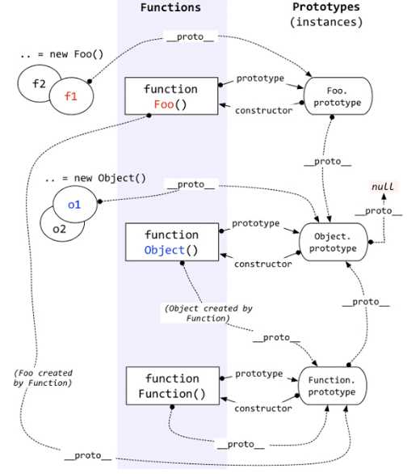

原型链，对象，构造函数，继承

__proto__（隐式原型）与prototype（显式原型）
每一个函数在创建之后都会拥有一个名为prototype的属性，这个属性指向函数的原型对象
1.在JS里，万物皆对象。方法（Function）是对象，方法的原型(Function.prototype)是对象。因此，它们都会具有对象共有的特点。
即：对象具有属性__proto__，可称为隐式原型，一个对象的隐式原型指向构造该对象的构造函数的原型，这也保证了实例能够访问在构造函数原型中定义的属性和方法。
2.方法(Function)
方法这个特殊的对象，除了和其他对象一样有上述_proto_属性之外，还有自己特有的属性——原型属性（prototype），这个属性是一个指针，指向一个对象，这个对象的用途就是包含所有实例共享的属性和方法（我们把这个对象叫做原型对象）。原型对象也有一个属性，叫做constructor，这个属性包含了一个指针，指回原构造函数。
好啦，知道了这两个基本点，我们来看看上面这副图。
1.构造函数Foo()
构造函数的原型属性Foo.prototype指向了原型对象，在原型对象里有共有的方法，所有构造函数声明的实例（这里是f1，f2）都可以共享这个方法。
2.原型对象Foo.prototype
Foo.prototype保存着实例共享的方法，有一个指针constructor指回构造函数。
3.实例
f1和f2是Foo这个对象的两个实例，这两个对象也有属性__proto__，指向构造函数的原型对象，这样子就可以像上面1所说的访问原型对象的所有方法啦。
另外：
构造函数Foo()除了是方法，也是对象啊，它也有__proto__属性，指向谁呢？
指向它的构造函数的原型对象呗。函数的构造函数不就是Function嘛，因此这里的__proto__指向了Function.prototype。
其实除了Foo()，Function(), Object()也是一样的道理。
原型对象也是对象啊，它的__proto__属性，又指向谁呢？
同理，指向它的构造函数的原型对象呗。这里是Object.prototype.
最后，Object.prototype的__proto__属性指向null。
总结：
1.对象有属性__proto__,指向该对象的构造函数的原型对象。
2.方法除了有属性__proto__,还有属性prototype，prototype指向该方法的原型对象。